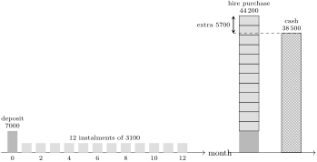

Curriculum Alignment
- Strand
-
2.0 Measurements and Geometry
- Sub-Strand
-
2.4 Commercial Arithmetic III
- Specific Learning Outcomes
-
Determine hire purchase costs of goods

45326. Give money to the nearest shilling and percentages to 1 decimal place unless the question says otherwise; exact answers in cents are also accepted.
![Runestone Academy logo]()
![MathJax logo]()